import pandas as pd
import os
import matplotlib
import matplotlib.pyplot as plt
import sqlite3
import seaborn as sns
import json
import glob
import scipy
import scipy.signal as signal
from matplotlib.dates import date2num
# Pre-defined madules for dataframes cleaning
import fitbit_dataprep as fit
import garminThe first thing to investigate is to determine the correlation between Fitbit and Garmin’s heart rate collection throughou the day. I have choosen a random day as a starting point.
Fitbit data preperation
Fitbit_dir = "./Fitbit/ShiYangLee/Physical Activity/heart_rate-2022-03-29.json"# Importing fitbit's heart rate data on day of interest
df_fitbit = pd.read_json(Fitbit_dir)
df_fitbit.head()| dateTime | value | |
|---|---|---|
| 0 | 2022-03-28 23:00:06 | {'bpm': 56, 'confidence': 3} |
| 1 | 2022-03-28 23:00:21 | {'bpm': 56, 'confidence': 3} |
| 2 | 2022-03-28 23:00:31 | {'bpm': 57, 'confidence': 3} |
| 3 | 2022-03-28 23:00:41 | {'bpm': 58, 'confidence': 3} |
| 4 | 2022-03-28 23:00:46 | {'bpm': 57, 'confidence': 3} |
The confidence value provided by Fitbit is rather unhelpful. As Fitbit officials only stated that confidence indicated the percentages of the measured heart rate matches with true heart rate value, with 1 the lowerst and 3 the highest. However, the precise definition of what the condifence value represented was nowhere to be found.
# Check for missing values
df_fitbit.isnull().sum()dateTime 0
value 0
dtype: int64# Since raw fitbit data is not in the desired form, we need to write a function
# to split the data.
fit.data_split(df_fitbit)The dataframe is already splitted!| dateTime | bpm | confidence | |
|---|---|---|---|
| 0 | 2022-03-28 23:00:06 | 56 | 3 |
| 1 | 2022-03-28 23:00:21 | 56 | 3 |
| 2 | 2022-03-28 23:00:31 | 57 | 3 |
| 3 | 2022-03-28 23:00:41 | 58 | 3 |
| 4 | 2022-03-28 23:00:46 | 57 | 3 |
| ... | ... | ... | ... |
| 11351 | 2022-03-29 22:59:38 | 75 | 3 |
| 11352 | 2022-03-29 22:59:43 | 79 | 2 |
| 11353 | 2022-03-29 22:59:48 | 73 | 2 |
| 11354 | 2022-03-29 22:59:53 | 68 | 3 |
| 11355 | 2022-03-29 22:59:58 | 64 | 3 |
11356 rows × 3 columns
# The data also require further cleaning
df_fitbit = fit.fitbit_dataprep(df_fitbit)The dataframe was already prepared!print(df_fitbit) bpm confidence
dateTime
2022-03-28 23:00:06 56 3
2022-03-28 23:00:21 56 3
2022-03-28 23:00:31 57 3
2022-03-28 23:00:41 58 3
2022-03-28 23:00:46 57 3
... ... ...
2022-03-29 22:59:38 75 3
2022-03-29 22:59:43 79 2
2022-03-29 22:59:48 73 2
2022-03-29 22:59:53 68 3
2022-03-29 22:59:58 64 3
[11356 rows x 2 columns]# Shifting data to account for british summer time change
# (Do your own job, Fitbit!)
df_fitbit.index = df_fitbit.index.shift(1, freq='H')As the aim of the notebook is to compare Fitbit towards Garmin’s data, which the heart rate data is by the minutes, we are going to trim Fitbit’s data down and to match Garmin’s dateTime.
# Preparing dummy indeces.
tmp = pd.date_range('2022-03-29 00:00', '2022-3-30 00:00', freq = 'T')
print(tmp)
print(len(tmp))DatetimeIndex(['2022-03-29 00:00:00', '2022-03-29 00:01:00',
'2022-03-29 00:02:00', '2022-03-29 00:03:00',
'2022-03-29 00:04:00', '2022-03-29 00:05:00',
'2022-03-29 00:06:00', '2022-03-29 00:07:00',
'2022-03-29 00:08:00', '2022-03-29 00:09:00',
...
'2022-03-29 23:51:00', '2022-03-29 23:52:00',
'2022-03-29 23:53:00', '2022-03-29 23:54:00',
'2022-03-29 23:55:00', '2022-03-29 23:56:00',
'2022-03-29 23:57:00', '2022-03-29 23:58:00',
'2022-03-29 23:59:00', '2022-03-30 00:00:00'],
dtype='datetime64[ns]', length=1441, freq='T')
1441# Get nearest datapoint in Fitbit df to the dummy indices.
loc = [df_fitbit.index.get_loc(x, "nearest") for x in tmp]
# Trim Fitbit df to the required rows.
df_fitbit = df_fitbit.iloc[loc]
# Setting the indices to correct time.
df_fitbit.index = df_fitbit.index.round(freq = "T")
df_fitbit.head()| bpm | confidence | |
|---|---|---|
| dateTime | ||
| 2022-03-29 00:00:00 | 56 | 3 |
| 2022-03-29 00:01:00 | 58 | 3 |
| 2022-03-29 00:02:00 | 56 | 3 |
| 2022-03-29 00:03:00 | 56 | 3 |
| 2022-03-29 00:04:00 | 55 | 3 |
Now that the Fitbit data looks good, it’s time to shift focus to Garmin data.
Garmin data preperation.
The garmin data was acquired through scripts named GarminDB, which utilized the API for Garmin Connect. The API convert unreadable raw FIT files to healthier databases. Let’s look at what databases there are.
!ls ./HealthData/DBsfitbit.db garmin.db garmin_summary.db summary.db
garmin_activities.db garmin_monitoring.db mshealth.db# Exploring what are contained in the garmin.db.
garmin_db = "./HealthData/DBs/garmin.db"
con = sqlite3.connect(garmin_db)
cur = con.cursor()
table = pd.read_sql_query("SELECT name FROM sqlite_master WHERE type='table'", con)
table| name | |
|---|---|
| 0 | _attributes |
| 1 | attributes |
| 2 | devices |
| 3 | weight |
| 4 | stress |
| 5 | sleep |
| 6 | sleep_events |
| 7 | resting_hr |
| 8 | daily_summary |
| 9 | files |
| 10 | device_info |
garmin_df = pd.read_sql_query("SELECT * FROM sleep", con)
garmin_df.head()| day | start | end | total_sleep | deep_sleep | light_sleep | rem_sleep | awake | |
|---|---|---|---|---|---|---|---|---|
| 0 | 2020-08-23 | None | None | 00:00:00.000000 | 00:00:00.000000 | 00:00:00.000000 | 00:00:00.000000 | 00:00:00.000000 |
| 1 | 2020-10-02 | None | None | 00:00:00.000000 | 00:00:00.000000 | 00:00:00.000000 | 00:00:00.000000 | 00:00:00.000000 |
| 2 | 2021-11-08 | None | None | 00:00:00.000000 | 00:00:00.000000 | 00:00:00.000000 | 00:00:00.000000 | 00:00:00.000000 |
| 3 | 2020-01-31 | None | None | 00:00:00.000000 | 00:00:00.000000 | 00:00:00.000000 | 00:00:00.000000 | 00:00:00.000000 |
| 4 | 2019-03-15 | None | None | 00:00:00.000000 | 00:00:00.000000 | 00:00:00.000000 | 00:00:00.000000 | 00:00:00.000000 |
Not what we are workign for. Further digging reveals that full raw data are located in “monitoring” databases.
garmin_monit_db = "./HealthData/DBs/garmin_monitoring.db"
garmin_monit_con = sqlite3.connect(garmin_monit_db)
pd.read_sql_query("SELECT name FROM sqlite_master WHERE type='table'", garmin_monit_con)| name | |
|---|---|
| 0 | _attributes |
| 1 | monitoring_info |
| 2 | monitoring_hr |
| 3 | monitoring_intensity |
| 4 | monitoring_climb |
| 5 | monitoring |
| 6 | monitoring_rr |
| 7 | monitoring_pulse_ox |
garmin_hr = pd.read_sql_query("SELECT * FROM monitoring_hr", garmin_monit_con)
garmin_hr.describe()| heart_rate | |
|---|---|
| count | 40649.000000 |
| mean | 73.473837 |
| std | 17.282922 |
| min | 44.000000 |
| 25% | 59.000000 |
| 50% | 73.000000 |
| 75% | 84.000000 |
| max | 176.000000 |
# Only select the particular day of March 29 2022.
garmin_0329_hr = garmin_hr.loc[(garmin_hr['timestamp'] >= '2022-03-29') & \
(garmin_hr['timestamp'] < '2022-03-30')]
print(garmin_0329_hr) timestamp heart_rate
2327 2022-03-29 09:29:00.000000 117
2328 2022-03-29 09:30:00.000000 123
2329 2022-03-29 09:31:00.000000 110
2330 2022-03-29 09:32:00.000000 97
2331 2022-03-29 09:33:00.000000 92
... ... ...
13375 2022-03-29 23:56:00.000000 55
13376 2022-03-29 23:57:00.000000 56
13377 2022-03-29 23:58:00.000000 57
13378 2022-03-29 23:59:00.000000 56
13379 2022-03-29 23:59:59.000000 58
[1036 rows x 2 columns]# Defines function for data preperation for Garmin data.
# For filling null values of heart rate data, we have chosed the method
# of taking the average of values before and after the null windows.
def average_fill(data):
"""
Function defined for filling null values in a time series panda series.
The method is by adding forward filling and backward filling in to
the original data, and taking averages, dividing by 2.
Any null window will be filled by the average of values before and after
the window.
"""
return data.ffill().fillna(method = 'bfill').\
add(data.bfill().fillna(method = 'ffill')).div(2)
def garmin_prep(data, start = None, end = None, reindex = 'T', \
data_type = 'monit'):
"""
Function for garmin data preperation, setting timetamp as indices,
converting datetime to format from years to seconds. Also fill null
values with average filling method.
"""
if data.index.dtype == pd.api.types.is_datetime64_any_dtype:
print("The datafarme had already been prepared!")
return None
if start != None and end != None:
data = data.loc[(data['timestamp'] >= start) & (data['timestamp'] < end)]
data_tmp = data.set_index('timestamp')
data_tmp.index = pd.to_datetime(data_tmp.index, format="%Y-%m-%d %H:%M:%S")
if reindex != False:
data_tmp = data_tmp.reindex(pd.date_range(start, end, freq = reindex))
if data_type == 'monit':
data_tmp = average_fill(data_tmp)
assert data_tmp.isnull().sum().values == 0
elif data_type == 'act_monit':
data_tmp['hr'] = average_fill(data_tmp['hr'])
print(data_tmp['hr'].isnull().sum())
assert data_tmp['hr'].isnull().sum() == 0
return data_tmpprint(pd.date_range('2022-03-29 00:00', '2022-03-30 00:00', freq = 'T'))DatetimeIndex(['2022-03-29 00:00:00', '2022-03-29 00:01:00',
'2022-03-29 00:02:00', '2022-03-29 00:03:00',
'2022-03-29 00:04:00', '2022-03-29 00:05:00',
'2022-03-29 00:06:00', '2022-03-29 00:07:00',
'2022-03-29 00:08:00', '2022-03-29 00:09:00',
...
'2022-03-29 23:51:00', '2022-03-29 23:52:00',
'2022-03-29 23:53:00', '2022-03-29 23:54:00',
'2022-03-29 23:55:00', '2022-03-29 23:56:00',
'2022-03-29 23:57:00', '2022-03-29 23:58:00',
'2022-03-29 23:59:00', '2022-03-30 00:00:00'],
dtype='datetime64[ns]', length=1441, freq='T')garmin_0329_hr = garmin_prep(garmin_hr, '2022-03-29 00:00', '2022-03-30 00:00')
print(garmin_0329_hr.head()) heart_rate
2022-03-29 00:00:00 55.0
2022-03-29 00:01:00 55.0
2022-03-29 00:02:00 55.0
2022-03-29 00:03:00 55.0
2022-03-29 00:04:00 56.0def garmin_vs_fitbit(fit, gar, gar_act = False):
gar_col = 'hr' if gar_act else 'heart_rate'
gar.plot(y = gar_col, use_index=True, kind = 'line', \
figsize = (12,12), label = 'Garmin', grid = True, ylabel = 'Heart Rate')
fit['bpm'].plot(y = 'bpm', grid = True, kind = 'line', linewidth = 1 \
, label = 'Fitbit', legend = True)
First visualization of heart rate data between Garmin and Fitbit
garmin_vs_fitbit(df_fitbit, garmin_0329_hr)
As seen in the plot above, Garmin has a tendency of overestimating hr (up to 20 bpm) when there are spikes. This result is consistent with my experiences in hand measuring my own hr. There is suggestion that Garmin’s hr algorithm is loosely tied with number of steps. Further data collection and investigation are required to check the claim.
plt.rcParams["figure.figsize"] = (12,12)
plt.scatter(df_fitbit.index, y = 'bpm', s=3, data = df_fitbit )
plt.scatter(garmin_0329_hr.index, y = 'heart_rate', s=5, data = garmin_0329_hr )
plt.grid(linestyle='-', linewidth=1)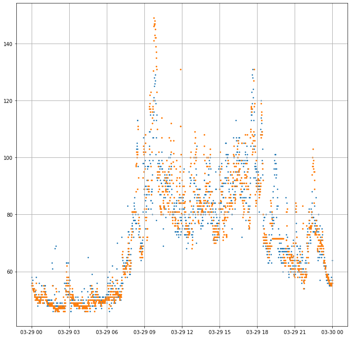
df_fitbit['bpm']dateTime
2022-03-29 00:00:00 56
2022-03-29 00:01:00 58
2022-03-29 00:02:00 56
2022-03-29 00:03:00 56
2022-03-29 00:04:00 55
..
2022-03-29 23:56:00 55
2022-03-29 23:57:00 57
2022-03-29 23:58:00 56
2022-03-29 23:59:00 56
2022-03-30 00:00:00 64
Name: bpm, Length: 1441, dtype: int64Now let’s investigate in the correlation between Fitbit and Garmin.
corr_df = df_fitbit.merge(garmin_0329_hr, left_index = True, right_index = True)
corr_df| bpm | confidence | heart_rate | |
|---|---|---|---|
| 2022-03-29 00:00:00 | 56 | 3 | 55.0 |
| 2022-03-29 00:01:00 | 58 | 3 | 55.0 |
| 2022-03-29 00:02:00 | 56 | 3 | 55.0 |
| 2022-03-29 00:03:00 | 56 | 3 | 55.0 |
| 2022-03-29 00:04:00 | 55 | 3 | 56.0 |
| ... | ... | ... | ... |
| 2022-03-29 23:56:00 | 55 | 3 | 55.0 |
| 2022-03-29 23:57:00 | 57 | 3 | 56.0 |
| 2022-03-29 23:58:00 | 56 | 3 | 57.0 |
| 2022-03-29 23:59:00 | 56 | 3 | 56.0 |
| 2022-03-30 00:00:00 | 64 | 3 | 56.0 |
1441 rows × 3 columns
def corr_plot(data, save = False):
plt.rcParams["figure.figsize"] = (8,8)
plt.figure()
plt.scatter(corr_df['bpm'], corr_df['heart_rate'], s = 5)
x = list(range(int(min(list(data['bpm']) + list(data['heart_rate']))), \
int(max(list(data['bpm']) + list(data['heart_rate'])))))
y = x
plt.plot(x, y)
tittle = "Heart rate comparison between Garmin and Fitbit"
plt.title(tittle)
plt.xlabel("Fitbit hr")
plt.ylabel('Garmin hr')
if save == True:
plt.savefig(f"{tittle}")
plt.show()corr_plot(corr_df, save = True)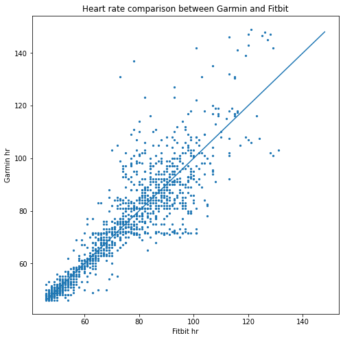
# joint_kws=dict(gridsize=20)
# sns.jointplot(data = corr_df[~corr_df.index.duplicated()] , x="bpm", \
# y="heart_rate", kind = 'hex', joint_kws = joint_kws, palette = sns.dark_palette("seagreen", as_cmap=True))
# x = list(range(int(min(list(corr_df['bpm']) + list(corr_df['heart_rate']))), \
# int(max(list(corr_df['bpm']) + list(corr_df['heart_rate'])))))
# y = x
# sns.lineplot(x, y)corr_df['bpm']2022-03-29 00:00:00 56
2022-03-29 00:01:00 58
2022-03-29 00:02:00 56
2022-03-29 00:03:00 56
2022-03-29 00:04:00 55
..
2022-03-29 23:56:00 55
2022-03-29 23:57:00 57
2022-03-29 23:58:00 56
2022-03-29 23:59:00 56
2022-03-30 00:00:00 64
Name: bpm, Length: 1441, dtype: int64corr_df.loc[corr_df.index.duplicated()]| bpm | confidence | heart_rate | |
|---|---|---|---|
| 2022-03-29 04:17:00 | 48 | 3 | 47.0 |
| 2022-03-29 10:23:00 | 99 | 1 | 107.0 |
corr_df.loc['2022-03-29 04:17:00']| bpm | confidence | heart_rate | |
|---|---|---|---|
| 2022-03-29 04:17:00 | 48 | 3 | 47.0 |
| 2022-03-29 04:17:00 | 48 | 3 | 47.0 |
act_dir = './Fitbit/ShiYangLee/Physical Activity/exercise-0.json'
pd.set_option('display.max_columns', None)
act_df = pd.read_json(act_dir)
act_df.head(2)| logId | activityName | activityTypeId | activityLevel | averageHeartRate | calories | duration | activeDuration | steps | source | logType | manualValuesSpecified | heartRateZones | lastModified | startTime | originalStartTime | originalDuration | hasGps | shouldFetchDetails | hasActiveZoneMinutes | distance | distanceUnit | tcxLink | speed | pace | elevationGain | activeZoneMinutes | vo2Max | |
|---|---|---|---|---|---|---|---|---|---|---|---|---|---|---|---|---|---|---|---|---|---|---|---|---|---|---|---|---|
| 0 | 46265675913 | Fitstar: Personal Trainer | 3104 | [{'minutes': 0, 'name': 'sedentary'}, {'minute... | 95 | 77 | 1146000 | 1146000 | 159.0 | {'type': 'app', 'name': 'Fitbit for Android', ... | manual | {'calories': False, 'distance': True, 'steps':... | [{'name': 'Out of Range', 'min': 30, 'max': 98... | 02/27/22 09:27:55 | 02/27/22 09:08:19 | 02/27/22 09:08:19 | 1146000 | False | False | False | NaN | NaN | NaN | NaN | NaN | NaN | NaN | NaN |
| 1 | 46265383938 | Yoga | 52000 | [{'minutes': 0, 'name': 'sedentary'}, {'minute... | 100 | 86 | 1273000 | 1273000 | 32.0 | {'type': 'app', 'name': 'Fitbit for Android', ... | manual | {'calories': False, 'distance': True, 'steps':... | [{'name': 'Out of Range', 'min': 30, 'max': 98... | 02/27/22 22:05:19 | 02/27/22 21:43:36 | 02/27/22 21:43:36 | 1273000 | False | False | False | NaN | NaN | NaN | NaN | NaN | NaN | NaN | NaN |
act_df = act_df[(act_df['activityName'] == 'Run') & (act_df['originalStartTime'] >= '03/23/22')]
longest_run_df = act_df.loc[act_df['distance'].idxmax()]
longest_run_dflogId 46904851848
activityName Run
activityTypeId 90009
activityLevel [{'minutes': 0, 'name': 'sedentary'}, {'minute...
averageHeartRate 130
calories 144
duration 1067000
activeDuration 1036000
steps 2329.0
source {'type': 'tracker', 'name': 'Charge 4', 'id': ...
logType tracker
manualValuesSpecified {'calories': False, 'distance': False, 'steps'...
heartRateZones [{'name': 'Out of Range', 'min': 30, 'max': 11...
lastModified 03/27/22 14:16:43
startTime 03/27/22 13:55:10
originalStartTime 03/27/22 13:55:10
originalDuration 1067000
hasGps True
shouldFetchDetails True
hasActiveZoneMinutes True
distance 2.537586
distanceUnit Kilometer
tcxLink https://www.fitbit.com/activities/exercise/469...
speed 8.89985
pace 404.501208
elevationGain 17.374
activeZoneMinutes {'totalMinutes': 18, 'minutesInHeartRateZones'...
vo2Max {'vo2Max': 64.82186}
Name: 54, dtype: objectstart_time = longest_run_df['startTime']
end_time = longest_run_df['lastModified']fitbit_run_df = pd.read_json("./Fitbit/ShiYangLee/"
"Physical Activity/heart_rate-2022-03-27.json")fitbit_run_df = fitbit_run_df[(fitbit_run_df['dateTime'] >=start_time) & \
(fitbit_run_df['dateTime'] <= end_time)]
data_split(fitbit_run_df)
fitbit_run_df = fitbit_dataprep(fitbit_run_df)
fitbit_run_df.head()| bpm | confidence | |
|---|---|---|
| dateTime | ||
| 2022-03-27 13:55:11 | 78 | 0 |
| 2022-03-27 13:55:14 | 78 | 0 |
| 2022-03-27 13:55:15 | 70 | 2 |
| 2022-03-27 13:55:18 | 70 | 2 |
| 2022-03-27 13:55:20 | 78 | 2 |
garmin_act_dir = './Garmin_05042022/DI_CONNECT/DI-Connect-Fitness/shiyanglee1998@gmail.com_0_summarizedActivities.json'
garmin_act_df = pd.read_json(garmin_act_dir)
garmin_act_df.head()| summarizedActivitiesExport | |
|---|---|
| 0 | [{'activityId': 8585417065, 'uuidMsb': 8769992... |
display(garmin_act_df['summarizedActivitiesExport'])0 [{'activityId': 8585417065, 'uuidMsb': 8769992...
Name: summarizedActivitiesExport, dtype: objectf = open(garmin_act_dir)
stud_obj = json.load(f)
garmin_act_df = pd.json_normalize(stud_obj[0]['summarizedActivitiesExport'])
display(garmin_act_df)
garmin_act_df = garmin_act_df[garmin_act_df['activityType'] == 'running']
garmin_act_df| activityId | uuidMsb | uuidLsb | name | activityType | userProfileId | timeZoneId | beginTimestamp | eventTypeId | rule | sportType | startTimeGmt | startTimeLocal | duration | distance | avgSpeed | avgHr | maxHr | calories | bmrCalories | avgFractionalCadence | maxFractionalCadence | elapsedDuration | movingDuration | deviceId | summarizedExerciseSets | avgVerticalSpeed | manufacturer | lapCount | waterEstimated | activeSets | totalSets | totalReps | minRespirationRate | maxRespirationRate | avgRespirationRate | startStress | endStress | differenceStress | parent | purposeful | autoCalcCalories | favorite | pr | elevationCorrected | decoDive | atpActivity | maxSpeed | maxRunCadence | steps | startLongitude | startLatitude | avgStrideLength | avgDoubleCadence | maxDoubleCadence | locationName | endLongitude | endLatitude | elevationGain | minElevation | maxElevation | maxVerticalSpeed | elevationLoss | |
|---|---|---|---|---|---|---|---|---|---|---|---|---|---|---|---|---|---|---|---|---|---|---|---|---|---|---|---|---|---|---|---|---|---|---|---|---|---|---|---|---|---|---|---|---|---|---|---|---|---|---|---|---|---|---|---|---|---|---|---|---|---|---|---|
| 0 | 8585417065 | 8769992561222502513 | -5381239037487348160 | Yoga | yoga | 103595922 | 159 | 1649168835000 | 9 | private | TRAINING | 1.649169e+12 | 1.649172e+12 | 1.380427e+06 | 0.000000 | 0.0000 | 115.0 | 138.0 | 486.04232 | 108.94052 | 0.0 | 0.0 | 1.389004e+06 | 0.0 | 3319523804 | [{'category': 'UNKNOWN', 'reps': 0, 'volume': ... | 0.0 | GARMIN | 1 | 137.0 | 8.0 | 8.0 | 0.0 | 6.0 | 16.0 | 13.0 | 87.0 | 82.0 | -5.0 | False | False | False | False | False | False | False | False | NaN | NaN | NaN | NaN | NaN | NaN | NaN | NaN | NaN | NaN | NaN | NaN | NaN | NaN | NaN | NaN |
| 1 | 8547669753 | -585674442942689358 | -8269768808003405382 | Highlands Walking | walking | 103595922 | 159 | 1648574171000 | 9 | private | STEPS | 1.648574e+12 | 1.648578e+12 | 3.939050e+05 | 35129.000854 | 0.0892 | 114.0 | 125.0 | 150.84072 | 29.33014 | 0.0 | 0.0 | 3.939050e+05 | 301000.0 | 3319523804 | NaN | NaN | GARMIN | 1 | 39.0 | NaN | NaN | NaN | NaN | NaN | NaN | NaN | NaN | NaN | False | False | False | False | False | False | False | False | 0.1312 | 59.0 | 596.0 | -4.223679 | 57.479507 | 48.644402 | 110.0 | 118.0 | Highlands | -4.223679 | 57.479507 | NaN | NaN | NaN | NaN | NaN |
| 2 | 8547387963 | -460097293658141230 | -6855219939043478596 | Highlands Walking | walking | 103595922 | 159 | 1648571549000 | 9 | private | STEPS | 1.648572e+12 | 1.648575e+12 | 6.436700e+05 | 104598.999023 | 0.1625 | 109.0 | 131.0 | 259.78124 | 50.28024 | 0.0 | 0.0 | 6.436700e+05 | 604000.0 | 3319523804 | NaN | NaN | GARMIN | 2 | 64.0 | NaN | NaN | NaN | NaN | NaN | NaN | NaN | NaN | NaN | False | False | False | False | False | True | False | False | 0.1751 | 85.0 | 1248.0 | -4.236015 | 57.481029 | 81.648981 | 120.0 | 170.0 | Highlands | -4.223692 | 57.479492 | 921.974373 | 98.037750 | 1356.273651 | 0.020634 | NaN |
| 3 | 8534876453 | 143174783359534367 | -6614897849812160408 | Highlands Breathwork | breathwork | 103595922 | 159 | 1648391441000 | 9 | private | TRAINING | 1.648391e+12 | 1.648395e+12 | 3.062180e+05 | 0.000000 | 0.0000 | 104.0 | 111.0 | 121.51058 | 20.95010 | 0.0 | 0.0 | 3.062180e+05 | 0.0 | 3319523804 | NaN | NaN | GARMIN | 1 | 30.0 | NaN | NaN | NaN | 4.0 | 14.0 | 4.0 | 88.0 | 94.0 | 6.0 | False | False | False | False | False | False | False | False | 0.0000 | NaN | NaN | -4.458025 | 57.515163 | NaN | NaN | NaN | Highlands | -4.458025 | 57.515163 | NaN | NaN | NaN | NaN | NaN |
| 4 | 8534680997 | 5243033286344131808 | -5225280365562076529 | Highlands Running | running | 103595922 | 159 | 1648389297000 | 9 | private | RUNNING | 1.648389e+12 | 1.648393e+12 | 1.064667e+06 | 257898.999023 | 0.2422 | 148.0 | 178.0 | 779.34372 | 83.80040 | 0.0 | 0.0 | 1.064667e+06 | 1004000.0 | 3319523804 | NaN | NaN | GARMIN | 3 | 106.0 | NaN | NaN | NaN | NaN | NaN | NaN | NaN | NaN | NaN | False | False | False | False | True | True | False | False | 0.3491 | 86.0 | 2370.0 | -4.457854 | 57.515198 | 100.382250 | 146.0 | 172.0 | Highlands | -4.458025 | 57.515167 | 441.679764 | 3300.000000 | 4042.931366 | 0.016471 | 511.347198 |
| 5 | 8524148849 | -5281915893233795026 | -5423911554964189808 | Highlands Breathwork | breathwork | 103595922 | 159 | 1648245617000 | 9 | private | TRAINING | 1.648246e+12 | 1.648246e+12 | 3.288570e+05 | 0.000000 | 0.0000 | 69.0 | 76.0 | 33.52016 | 25.14012 | 0.0 | 0.0 | 3.288570e+05 | 0.0 | 3319523804 | NaN | NaN | GARMIN | 1 | 32.0 | NaN | NaN | NaN | 4.0 | 13.0 | 4.0 | 37.0 | 54.0 | 17.0 | False | False | False | False | False | False | False | False | 0.0000 | NaN | NaN | -4.457852 | 57.515160 | NaN | NaN | NaN | Highlands | -4.457852 | 57.515160 | NaN | NaN | NaN | NaN | NaN |
| 6 | 8523132998 | -7226774362203664814 | -8147720748920905653 | Highlands Running | running | 103595922 | 159 | 1648230247000 | 9 | private | RUNNING | 1.648230e+12 | 1.648230e+12 | 9.274030e+05 | 200728.002930 | 0.2164 | 132.0 | 157.0 | 569.84272 | 75.42036 | 0.0 | 0.0 | 9.274030e+05 | 861000.0 | 3319523804 | NaN | NaN | GARMIN | 3 | 92.0 | NaN | NaN | NaN | NaN | NaN | NaN | NaN | NaN | NaN | False | False | False | False | False | True | False | False | 0.3649 | 88.0 | 1934.0 | -4.457877 | 57.515087 | 92.692598 | 140.0 | 176.0 | Highlands | -4.457845 | 57.515163 | 493.555641 | 3000.000000 | 3700.000000 | 0.028839 | 475.959206 |
| 7 | 8516186695 | 1362925181960931509 | -6160943228134636888 | Highlands Breathwork | breathwork | 103595922 | 159 | 1648133045000 | 9 | private | TRAINING | 1.648133e+12 | 1.648133e+12 | 3.086410e+05 | 0.000000 | 0.0000 | 77.0 | 94.0 | 41.90020 | 20.95010 | 0.0 | 0.0 | 3.086410e+05 | 0.0 | 3319523804 | NaN | NaN | GARMIN | 1 | 30.0 | NaN | NaN | NaN | 4.0 | 15.0 | 4.0 | 39.0 | 79.0 | 40.0 | False | False | False | False | False | False | False | False | 0.0000 | NaN | NaN | -4.239242 | 57.480835 | NaN | NaN | NaN | Highlands | -4.239242 | 57.480835 | NaN | NaN | NaN | NaN | NaN |
| 8 | 8514711795 | -272532357588563598 | -5415946412436882267 | Highlands Walking | walking | 103595922 | 159 | 1648114829000 | 9 | private | STEPS | 1.648115e+12 | 1.648115e+12 | 9.979850e+05 | 146721.997070 | 0.1470 | 125.0 | 136.0 | 460.90220 | 83.80040 | 0.0 | 0.0 | 9.979850e+05 | 895000.0 | 3319523804 | NaN | NaN | GARMIN | 2 | 99.0 | NaN | NaN | NaN | NaN | NaN | NaN | NaN | NaN | NaN | False | False | False | False | False | True | False | False | 0.2075 | 65.0 | 1832.0 | -4.221631 | 57.479488 | 72.304054 | 122.0 | 130.0 | Highlands | -4.239240 | 57.480835 | 234.560871 | 42.115098 | 1408.461666 | 0.019548 | 905.342150 |
| activityId | uuidMsb | uuidLsb | name | activityType | userProfileId | timeZoneId | beginTimestamp | eventTypeId | rule | sportType | startTimeGmt | startTimeLocal | duration | distance | avgSpeed | avgHr | maxHr | calories | bmrCalories | avgFractionalCadence | maxFractionalCadence | elapsedDuration | movingDuration | deviceId | summarizedExerciseSets | avgVerticalSpeed | manufacturer | lapCount | waterEstimated | activeSets | totalSets | totalReps | minRespirationRate | maxRespirationRate | avgRespirationRate | startStress | endStress | differenceStress | parent | purposeful | autoCalcCalories | favorite | pr | elevationCorrected | decoDive | atpActivity | maxSpeed | maxRunCadence | steps | startLongitude | startLatitude | avgStrideLength | avgDoubleCadence | maxDoubleCadence | locationName | endLongitude | endLatitude | elevationGain | minElevation | maxElevation | maxVerticalSpeed | elevationLoss | |
|---|---|---|---|---|---|---|---|---|---|---|---|---|---|---|---|---|---|---|---|---|---|---|---|---|---|---|---|---|---|---|---|---|---|---|---|---|---|---|---|---|---|---|---|---|---|---|---|---|---|---|---|---|---|---|---|---|---|---|---|---|---|---|---|
| 4 | 8534680997 | 5243033286344131808 | -5225280365562076529 | Highlands Running | running | 103595922 | 159 | 1648389297000 | 9 | private | RUNNING | 1.648389e+12 | 1.648393e+12 | 1.064667e+06 | 257898.999023 | 0.2422 | 148.0 | 178.0 | 779.34372 | 83.80040 | 0.0 | 0.0 | 1.064667e+06 | 1004000.0 | 3319523804 | NaN | NaN | GARMIN | 3 | 106.0 | NaN | NaN | NaN | NaN | NaN | NaN | NaN | NaN | NaN | False | False | False | False | True | True | False | False | 0.3491 | 86.0 | 2370.0 | -4.457854 | 57.515198 | 100.382250 | 146.0 | 172.0 | Highlands | -4.458025 | 57.515167 | 441.679764 | 3300.0 | 4042.931366 | 0.016471 | 511.347198 |
| 6 | 8523132998 | -7226774362203664814 | -8147720748920905653 | Highlands Running | running | 103595922 | 159 | 1648230247000 | 9 | private | RUNNING | 1.648230e+12 | 1.648230e+12 | 9.274030e+05 | 200728.002930 | 0.2164 | 132.0 | 157.0 | 569.84272 | 75.42036 | 0.0 | 0.0 | 9.274030e+05 | 861000.0 | 3319523804 | NaN | NaN | GARMIN | 3 | 92.0 | NaN | NaN | NaN | NaN | NaN | NaN | NaN | NaN | NaN | False | False | False | False | False | True | False | False | 0.3649 | 88.0 | 1934.0 | -4.457877 | 57.515087 | 92.692598 | 140.0 | 176.0 | Highlands | -4.457845 | 57.515163 | 493.555641 | 3000.0 | 3700.000000 | 0.028839 | 475.959206 |
print(pd.Timestamp('2022-03-27 14:54:00') - pd.to_timedelta(1648389297000, unit = 'ms'))1970-01-01 00:59:03garmin_act_df['start_time'] = pd.Timestamp('1970-01-01 01:00:00') + pd.to_timedelta(\
garmin_act_df['beginTimestamp'], unit='ms')
garmin_act_df['end_time'] = (garmin_act_df['start_time'] + pd.to_timedelta(\
garmin_act_df['duration'], unit = 'ms')).dt.strftime(\
'%Y-%m-%d %H:%M:%S')
garmin_act_df[['start_time', 'end_time']]| start_time | end_time | |
|---|---|---|
| 4 | 2022-03-27 14:54:57 | 2022-03-27 15:12:41 |
| 6 | 2022-03-25 18:44:07 | 2022-03-25 18:59:34 |
time = ['start_time', 'end_time']
start_time, end_time = [garmin_act_df[garmin_act_df['activityId'] == 8534680997] \
[x].values for x in time]
print(start_time)['2022-03-27T14:54:57.000000000'][garmin_act_df[garmin_act_df['activityId'] == 8534680997] \
[x].values for x in time][array(['2022-03-27T14:54:57.000000000'], dtype='datetime64[ns]'),
array(['2022-03-27 15:12:41'], dtype=object)]garmin_act_monit_db = "./HealthData/DBs/garmin_activities.db"
garmin_act_monit_con = sqlite3.connect(garmin_act_monit_db)
garmin_act_monit_df = pd.read_sql_query("SELECT name FROM sqlite_master"
" WHERE type = 'table'", garmin_act_monit_con)garmin_act_monit_df| name | |
|---|---|
| 0 | _attributes |
| 1 | activities |
| 2 | activities_devices |
| 3 | activity_laps |
| 4 | activity_records |
| 5 | steps_activities |
| 6 | paddle_activities |
| 7 | cycle_activities |
garmin_act_rec = pd.read_sql_query("SELECT * FROM activity_records", garmin_act_monit_con)garmin_act_rec| activity_id | record | timestamp | position_lat | position_long | distance | cadence | hr | rr | altitude | speed | temperature | |
|---|---|---|---|---|---|---|---|---|---|---|---|---|
| 0 | 8534680997 | 0 | 2022-03-27 13:54:57.000000 | NaN | NaN | 0.00000 | 0.0 | 92 | NaN | None | 0.0000 | None |
| 1 | 8534680997 | 1 | 2022-03-27 13:55:14.000000 | 57.515198 | -4.457859 | 0.00222 | 0.0 | 89 | NaN | None | 0.0000 | None |
| 2 | 8534680997 | 2 | 2022-03-27 13:55:26.000000 | 57.515236 | -4.457681 | 0.01761 | 0.0 | 86 | NaN | None | 0.0000 | None |
| 3 | 8534680997 | 3 | 2022-03-27 13:55:36.000000 | 57.515316 | -4.457679 | 0.02850 | 0.0 | 89 | NaN | None | 3.2868 | None |
| 4 | 8534680997 | 4 | 2022-03-27 13:55:37.000000 | 57.515327 | -4.457682 | 0.02978 | 0.0 | 86 | NaN | None | 3.2904 | None |
| ... | ... | ... | ... | ... | ... | ... | ... | ... | ... | ... | ... | ... |
| 7350 | 8709534727 | 174 | 2022-04-26 13:33:24.000000 | 57.479496 | -4.223857 | 1.50551 | 55.0 | 125 | NaN | None | 5.7924 | None |
| 7351 | 8709534727 | 175 | 2022-04-26 13:33:26.000000 | 57.479576 | -4.223705 | 1.51946 | 0.0 | 129 | NaN | None | 5.8104 | None |
| 7352 | 8709534727 | 176 | 2022-04-26 13:33:30.000000 | 57.479591 | -4.223726 | 1.52277 | 0.0 | 129 | NaN | None | 5.9112 | None |
| 7353 | 8709534727 | 177 | 2022-04-26 13:33:31.000000 | 57.479591 | -4.223738 | 1.52348 | 0.0 | 130 | NaN | None | 5.9112 | None |
| 7354 | 8709534727 | 178 | 2022-04-26 13:33:35.000000 | 57.479599 | -4.223732 | 1.52440 | 0.0 | 130 | NaN | None | 5.9148 | None |
7355 rows × 12 columns
garmin_act_rec.columnsIndex(['activity_id', 'record', 'timestamp', 'position_lat', 'position_long',
'distance', 'cadence', 'hr', 'rr', 'altitude', 'speed', 'temperature'],
dtype='object')garmin_run_df = garmin_act_rec[garmin_act_rec['activity_id'] == '8534680997']
garmin_run_df['timestamp'] = pd.to_datetime(garmin_run_df['timestamp'], \
format='%Y-%m-%d %H:%M:%S.%f')
print(garmin_run_df.timestamp.dtype)
garmin_run_df['timestamp'] = garmin_run_df['timestamp'] + pd.Timedelta(1, 'h')
garmin_run_df.head()datetime64[ns]/tmp/ipykernel_16227/3239170002.py:2: SettingWithCopyWarning:
A value is trying to be set on a copy of a slice from a DataFrame.
Try using .loc[row_indexer,col_indexer] = value instead
See the caveats in the documentation: https://pandas.pydata.org/pandas-docs/stable/user_guide/indexing.html#returning-a-view-versus-a-copy
garmin_run_df['timestamp'] = pd.to_datetime(garmin_run_df['timestamp'], \
/tmp/ipykernel_16227/3239170002.py:5: SettingWithCopyWarning:
A value is trying to be set on a copy of a slice from a DataFrame.
Try using .loc[row_indexer,col_indexer] = value instead
See the caveats in the documentation: https://pandas.pydata.org/pandas-docs/stable/user_guide/indexing.html#returning-a-view-versus-a-copy
garmin_run_df['timestamp'] = garmin_run_df['timestamp'] + pd.Timedelta(1, 'h')| activity_id | record | timestamp | position_lat | position_long | distance | cadence | hr | rr | altitude | speed | temperature | |
|---|---|---|---|---|---|---|---|---|---|---|---|---|
| 0 | 8534680997 | 0 | 2022-03-27 14:54:57 | NaN | NaN | 0.00000 | 0.0 | 92 | NaN | None | 0.0000 | None |
| 1 | 8534680997 | 1 | 2022-03-27 14:55:14 | 57.515198 | -4.457859 | 0.00222 | 0.0 | 89 | NaN | None | 0.0000 | None |
| 2 | 8534680997 | 2 | 2022-03-27 14:55:26 | 57.515236 | -4.457681 | 0.01761 | 0.0 | 86 | NaN | None | 0.0000 | None |
| 3 | 8534680997 | 3 | 2022-03-27 14:55:36 | 57.515316 | -4.457679 | 0.02850 | 0.0 | 89 | NaN | None | 3.2868 | None |
| 4 | 8534680997 | 4 | 2022-03-27 14:55:37 | 57.515327 | -4.457682 | 0.02978 | 0.0 | 86 | NaN | None | 3.2904 | None |
print(garmin_prep.__doc__)
Function for garmin data preperation, setting timetamp as indices,
converting datetime to format from years to seconds. Also fill null
values with average filling method.
garmin_run_df = garmin_prep(garmin_run_df, reindex = False, data_type = 'act_monit')0garmin_run_df.head()| activity_id | record | position_lat | position_long | distance | cadence | hr | rr | altitude | speed | temperature | |
|---|---|---|---|---|---|---|---|---|---|---|---|
| timestamp | |||||||||||
| 2022-03-27 14:54:57 | 8534680997 | 0 | NaN | NaN | 0.00000 | 0.0 | 92.0 | NaN | None | 0.0000 | None |
| 2022-03-27 14:55:14 | 8534680997 | 1 | 57.515198 | -4.457859 | 0.00222 | 0.0 | 89.0 | NaN | None | 0.0000 | None |
| 2022-03-27 14:55:26 | 8534680997 | 2 | 57.515236 | -4.457681 | 0.01761 | 0.0 | 86.0 | NaN | None | 0.0000 | None |
| 2022-03-27 14:55:36 | 8534680997 | 3 | 57.515316 | -4.457679 | 0.02850 | 0.0 | 89.0 | NaN | None | 3.2868 | None |
| 2022-03-27 14:55:37 | 8534680997 | 4 | 57.515327 | -4.457682 | 0.02978 | 0.0 | 86.0 | NaN | None | 3.2904 | None |
fit_run_dir = "./Fitbit/ShiYangLee/Physical Activity/heart_rate-2022-03-27.json"
fit_run_raw = pd.read_json(fit_run_dir)
fit_run_raw.head()| dateTime | value | |
|---|---|---|
| 0 | 2022-03-27 00:00:09 | {'bpm': 55, 'confidence': 3} |
| 1 | 2022-03-27 00:00:24 | {'bpm': 55, 'confidence': 3} |
| 2 | 2022-03-27 00:00:29 | {'bpm': 54, 'confidence': 3} |
| 3 | 2022-03-27 00:00:44 | {'bpm': 54, 'confidence': 3} |
| 4 | 2022-03-27 00:00:59 | {'bpm': 54, 'confidence': 3} |
data_split(fit_run_raw)
fit_run_df = fitbit_dataprep(fit_run_raw)
fit_run_df.index = fit_run_df.index.shift(1, freq='H')fit_run_df = fit_run_df[(fit_run_df.index >= start_time[0]) &
(fit_run_df.index <= end_time[0])]
fit_run_df.head()| bpm | confidence | |
|---|---|---|
| dateTime | ||
| 2022-03-27 14:55:03 | 78 | 2 |
| 2022-03-27 14:55:11 | 78 | 0 |
| 2022-03-27 14:55:14 | 78 | 0 |
| 2022-03-27 14:55:15 | 70 | 2 |
| 2022-03-27 14:55:18 | 70 | 2 |
garmin_vs_fitbit(fit_run_df, garmin_run_df, gar_act = True)
garmin_run_df['cadence'].plot(label='Cadence')
plt.legend()<matplotlib.legend.Legend at 0x7f55b8ed8df0>
test = garmin_run_df[['hr', 'cadence']].merge(fit_run_df, left_index = True, \
right_index = True)
test.head()
test.to_csv('test.csv')print(len(test))126test[['hr', 'bpm', 'cadence']].plot()<AxesSubplot:>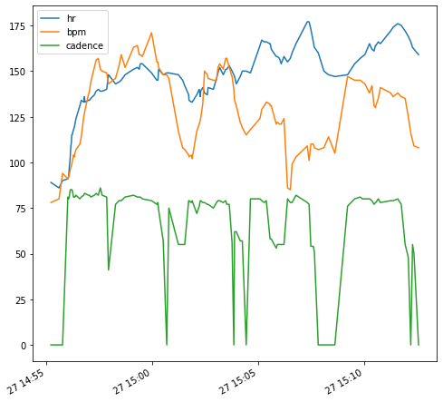
test['diff'] = abs(test['bpm'] - test['hr'])
test['cadence_diff'] = abs(test['cadence'] -test['cadence'].shift(1))
test['cadence_max_diff'] = max(test['cadence']) - test['cadence']
test['cadence_max_diff'] = test['cadence_max_diff']
test[['diff', 'cadence_max_diff']].plot()<AxesSubplot:>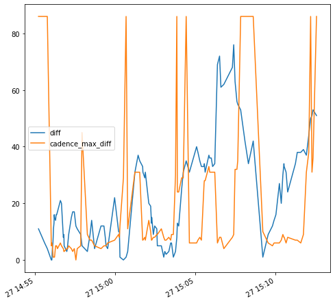
test[['diff', 'cadence']].plot()<AxesSubplot:>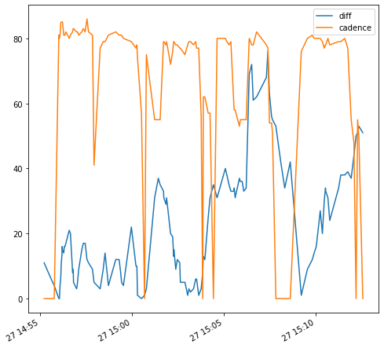
garmin_run_df[['hr', 'cadence']].to_csv('garmin_test.csv')
fit_run_df.to_csv('fitbit.csv')def open_json(direct, table):
con = sqlite3.connect(direct)
return pd.read_sql_query(f"SELECT * FROM {table}", con)def cadence_plot(idx, garmin, fitbit, inFunc = True, peak = True):
tmp = open_json('./HealthData/DBs/garmin_activities.db', 'activities')
tmp = tmp[tmp['activity_id'] == idx]
start = pd.to_datetime(tmp['start_time'].values[0])
end = pd.to_datetime(tmp['stop_time'].values[0])
for attempt in range(2):
fitbit_tmp = fitbit.copy()
if start >= pd.to_datetime('2022-03-27 01:00:00'):
start = start + pd.Timedelta(1, 'h')
end = end + pd.Timedelta(1, 'h')
fitbit_tmp.index = fitbit.index.shift(1, freq='H')
fitbit_tmp = fitbit_tmp[(fitbit_tmp.index >= start) &
(fitbit_tmp.index <= end)]
if len(fitbit_tmp) == 0 and attempt == 0:
print("Fitbit data for activity ", idx, "not found!")
print("Trying to fetch data from Fitbit folder under Fitness folder directory...")
# %run fitbit_generate_hr.ipynb
fitbit = pd.read_csv('./Fitbit/ShiYangLee/Physical Activity/heart_rate_full.csv')
fitbit = fitbit_dataprep(fitbit)
fitbit = fitbit.sort_index()
continue
if len(fitbit_tmp) == 0 and attempt == 1:
print("Fitbit data missing! Update Fitbit data manually by"
" replacing data export under Fitness directory and "
"generate complete hr data by running fitbit_generate_hr.ipynb")
raise ValueError()
else:
break
fitbit_tmp = fitbit_tmp.resample('5s').mean()
fitbit_tmp = fitbit_tmp.interpolate()
garmin_tmp = garmin[garmin['activity_id'] == idx]
garmin_tmp = garmin_tmp.set_index('timestamp')
garmin_tmp.index = pd.to_datetime(garmin_tmp.index)
garmin_tmp.index = garmin_tmp.index.map(lambda x : x + pd.Timedelta(1, 'h') \
if x >= pd.to_datetime('2022-03-27 01:00:00') \
else x)
garmin_tmp = garmin_tmp[['hr', 'cadence']]
garmin_tmp = garmin_tmp.resample('5s').mean()
garmin_tmp['cadence_diff'] = abs(garmin_tmp['cadence'] - garmin_tmp['cadence'].shift(1))
garmin_tmp['cadence_max_diff'] = max(garmin_tmp['cadence']) - garmin_tmp['cadence']
garmin_tmp = garmin_tmp.interpolate()
merged_df = garmin_tmp.merge(fitbit_tmp, left_index = True, \
right_index = True)
merged_df['diff'] = abs(merged_df['bpm'] - merged_df['hr'])
# merged_df['cadence_diff'] = abs(merged_df['cadence'] -merged_df['cadence'].shift(1))
# merged_df['cadence_max_diff'] = max(merged_df['cadence']) - merged_df['cadence']
# merged_df['cadence_max_diff'] = merged_df['cadence_max_diff']
if inFunc == False:
fig, axs = plt.subplots(2, 1)
axs[0].plot(merged_df[['hr', 'bpm', 'cadence']])
axs[1].plot(merged_df[['diff', 'cadence_max_diff']])
if peak == True:
def to_date(value):
_start = merged_df.index[0]
return pd.to_datetime(_start) + pd.to_timedelta(5*value, 's')
peaks, properties = signal.find_peaks(merged_df['diff'], height=20,\
width = 0)
axs[1].plot(merged_df['diff'].iloc[peaks], "x")
for i in range(len(peaks)):
cmap = plt.cm.Reds
norm = matplotlib.colors.Normalize(vmin=-1, vmax=len(peaks)+5)
axs[1].axvspan(date2num(to_date(properties['left_ips'][i])),\
date2num(to_date(properties['right_ips'][i])), \
color = 'yellow')
# ymin=0, ymax = 80)
# ymin=peaks[i]-properties['prominences'][i], \
# ymax=merged_df['diff'].iloc[peaks[i]])
plt.show()
return merged_df fit_raw_df = pd.read_csv('./Fitbit/ShiYangLee/Physical Activity/heart_rate_full.csv')
fit_raw_df = fitbit_dataprep(fit_raw_df)
fit_raw_df.head()| bpm | confidence | |
|---|---|---|
| dateTime | ||
| 2022-02-26 22:11:46 | 73 | 3 |
| 2022-02-26 22:11:51 | 76 | 3 |
| 2022-02-26 22:11:56 | 76 | 2 |
| 2022-02-26 22:12:06 | 75 | 2 |
| 2022-02-26 22:12:21 | 74 | 3 |
fit_raw_df.index = pd.to_datetime(fit_raw_df.index)def all_cadence_plot(activity = 'running', save = False, peak = True, **kwargs):
def garmin_get_running_id():
garmin_act = open_json('./HealthData/DBs/garmin_activities.db', 'activities')
garmin_act = garmin_act[garmin_act['sport'] == activity]
return garmin_act['activity_id'].to_list()
run_ids = garmin_get_running_id()
for i in range(len(run_ids)):
try:
df = cadence_plot(run_ids[i], garmin_act_rec, fit_raw_df)
except:
continue
fig, axs = plt.subplots(2, **kwargs)
axs[0].plot(df[['hr', 'bpm', 'cadence']], \
label=['Garmin_hr', 'Fitbit_hr', 'Cadence'])
axs[0].legend()
axs[1].plot(df[['diff', 'cadence_max_diff']], \
label=['hr_difference', 'cadence_drop'])
if peak == True:
def to_date(value):
_start = df.index[0]
return pd.to_datetime(_start) + pd.to_timedelta(5*value, 's')
peaks, properties = signal.find_peaks(df['diff'], height=20,\
width = 0)
axs[1].plot(df['diff'].iloc[peaks], "x")
for j in range(len(peaks)):
cmap = plt.cm.Reds
norm = matplotlib.colors.Normalize(vmin=-1, vmax=len(peaks)+5)
axs[1].axvspan(date2num(to_date(properties['left_ips'][j])),\
date2num(to_date(properties['right_ips'][j])), \
color = 'yellow')
axs[1].legend()
fig.supxlabel('Date Time')
if save == True:
plt.savefig(f"{activity}_cadence_plot.png")
plt.show()all_cadence_plot(figsize = (10, 10))Fitbit data for activity 8740864771 not found!
Trying to fetch data from Fitbit folder under Fitness folder directory...
Fitbit data missing! Update Fitbit data manually by replacing data export under Fitness directory and generate complete hr data by running fitbit_generate_hr.ipynb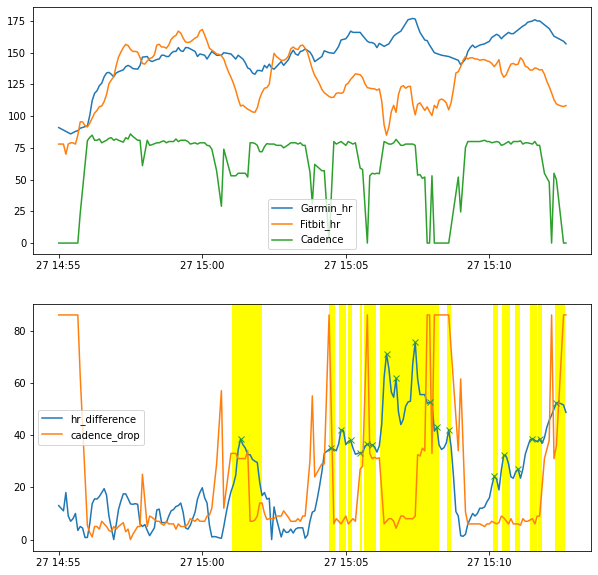
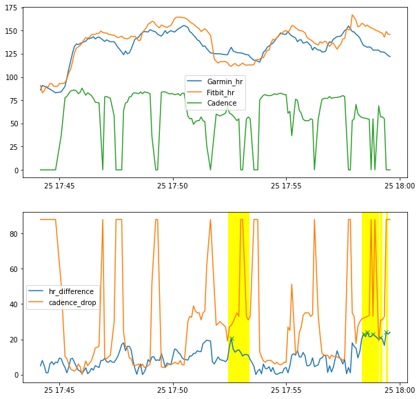
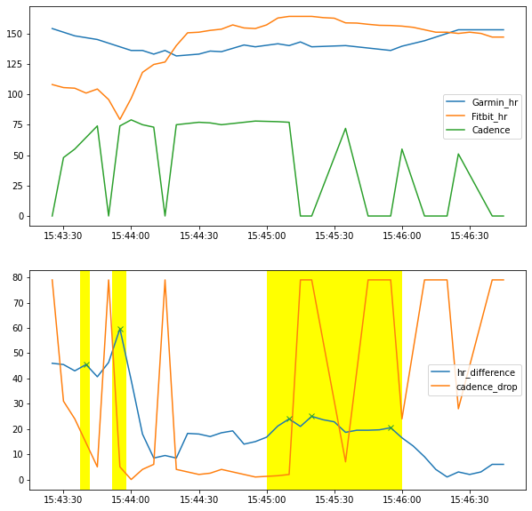

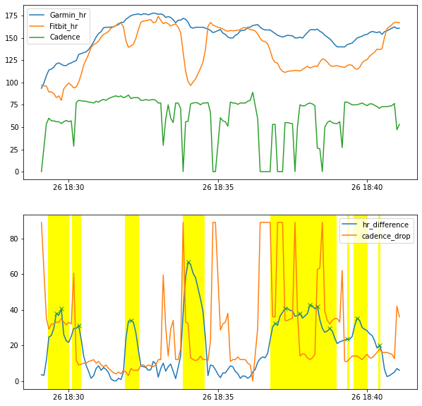
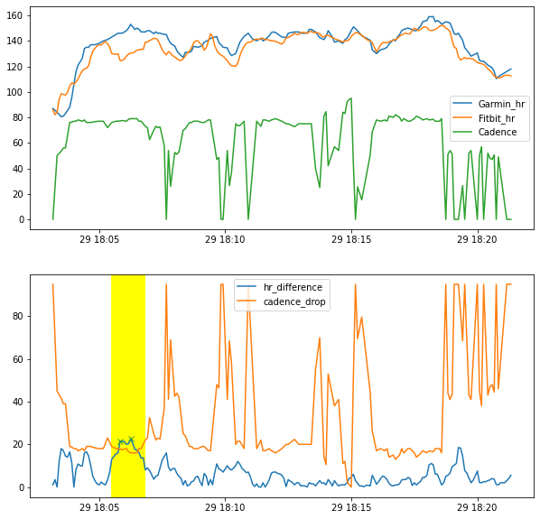
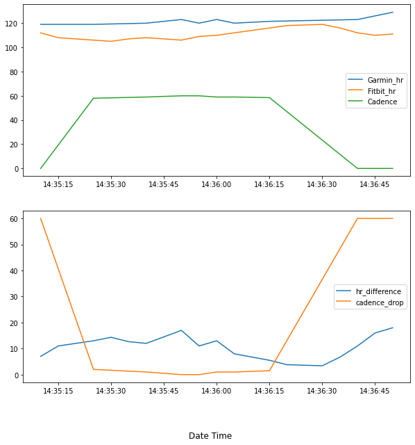
test_run = cadence_plot('8740864771', garmin_act_rec, fit_raw_df, inFunc = False)Fitbit data for activity 8740864771 not found!
Trying to fetch data from Fitbit folder under Fitness folder directory...
Fitbit data missing! Update Fitbit data manually by replacing data export under Fitness directory and generate complete hr data by running fitbit_generate_hr.ipynbValueError: test_run.index[0]cadence_plot('8523132998', garmin_act_rec, fit_raw_df)cadence_plot('8693043387', garmin_act_rec, fit_raw_df)test = open_json('./HealthData/DBs/garmin_activities.db', 'activities')test = test[test['sport'] == 'running']
test# dir_list = glob.glob('./Fitbit/ShiYangLee/Physical Activity/heart_rate-*.json')
# dfs = []
# for file in dir_list:
# data = pd.read_json(file)
# dfs.append(data)
# temp = pd.concat(dfs, ignore_index=True)
# temp
# data_split(temp)
# fitbit_raw_df = fitbit_dataprep(temp)
# fitbit_raw_df = fitbit_raw_df.sort_index()
# fitbit_raw_dftest_runtest_run = cadence_plot('8534680997', garmin_act_rec, fit_raw_df, peak = True, inFunc = False)all_cadence_plot(activity = 'walking', figsize=(15, 30), save=True)for i in range(-1, 2):
try:
print(1/i)
except:
continue
print(i, "HIT")